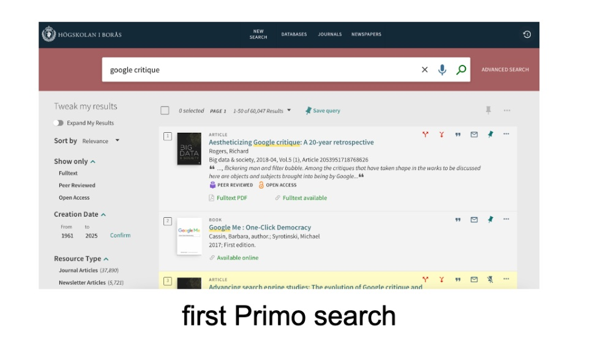
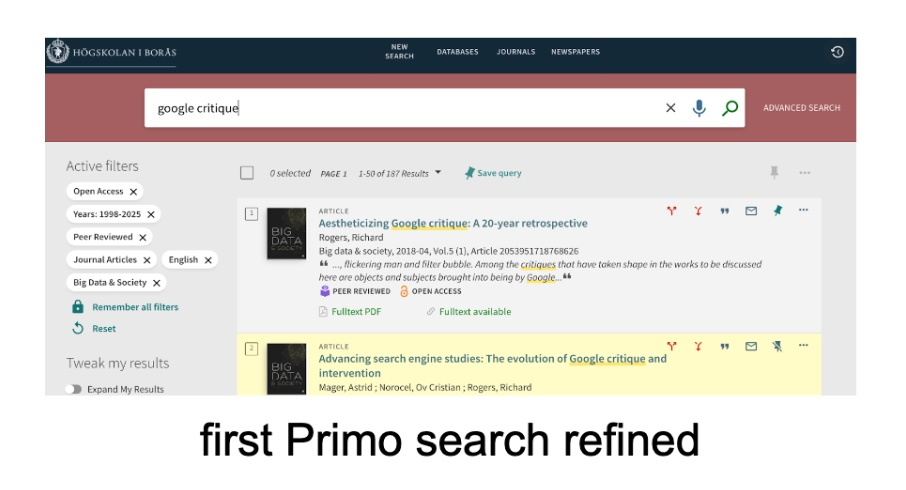
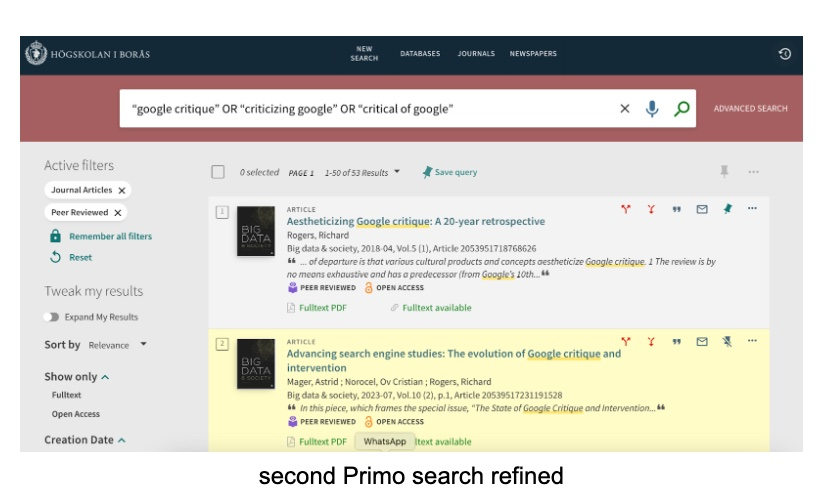
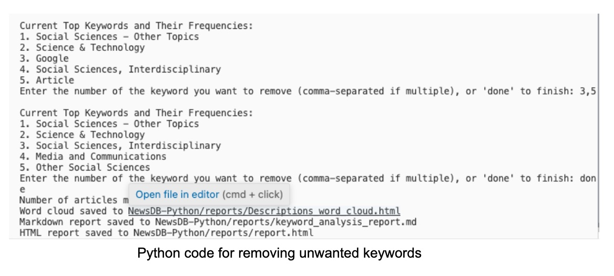

Our dataset
We started our group project with a relatively clear idea of what we wanted to find out — and this led us to believe that putting together the necessary dataset would be a relatively straightforward affair: we wanted to know "how Google has been critiqued in the academic literature" and we agreed we would use Primo to get our data.
But: Homo putat, Deus mutat — or, in our case, Datum mutat.
We conducted a quick initial search on Primo for [google critique] and this yielded a staggering 60,047 results.
This was quickly whittled down by refining the search to journal articles in peer-reviewed journals, published in English between 1998 and 2025. As the list was still rather long, we decided to try focusing on one journal only. We chose Big Data & Society, an open access, peer-reviewed scholarly journal that publishes “interdisciplinary work principally in the social sciences, humanities and computing and their intersections with the arts and natural sciences about the implications of Big Data for societies”. We felt that this would give us a broad enough range of writing in our dataset. This refined search returned a manageable list of 187 results from Primo.
We requested this list from Primo, turned it into a Google Sheet and rolled up our sleeves to parse and study our data. This included splitting the spreadsheet columns, using the Free Word Cloud Generator to create word clouds for the Title, Abstract and Keyword columns (to give us a better understanding of the issues/topics/concepts being written about), generating a list of the most common keywords and their frequencies, and simply reading through the individual entries.

We quickly agreed that this initial dataset had a few obvious limitations:
Firstly, using only one journal — despite its interdisciplinary nature — is not representative of the academic literature and thus limits our ability to survey the state of the art with respect to Google critique.
Secondly, Big Data & Society has only been published since 2014 but Google has been around since 1998 - this omits 16 possible years of academic reactions to the corporation, its search engine and how its algorithm and more generally choices and actions affect society.*
(* Here we also discussed the possibility of looking at different periods in Google’s history, obvious inflection points such as the decision to leave China in 2010 or to ditch the “Don’t be evil” motto in 2018, and how these may or may not be reflected in the academic literature represented by our journal articles — a project some of us may return to another day!)
Thirdly, the initial search was so broad that our dataset included many keywords and topics at the periphery of our word clouds.
These most obvious limitations led us to agree to revisit our search on Primo, to refine it differently in order to gain access to a more discrete set of search results while at the same time expanding the scope of the search.
We changed the search terms to [“google critique” OR “criticizing google” OR “critical of google”]. This yielded a smaller set of 715 results — further refining it, to only peer-reviewed journals, reduced it to a manageable dataset with 53 results.
Although we briefly entertained conducting additional searches for the sake of comparison, using different strategies to further refine the results and better hone in on our research focus, we agreed that the search results offered a solid dataset and that we should proceed to the next stages of the project. We thus requested the list once more from Primo and set about curating it.
As a first step, this involved asking ourselves what we wanted to actually do with the data - and therefore formulating more concrete research questions. We settled on:
- What are the keywords in the academic literature selected for our dataset? What are their frequencies? What are the top 5 keywords (and their frequencies)?
- How many articles related to these top 5 keywords have been published? What are their titles and who are the authors?
- Which words appear most frequently in the abstracts (descriptions) of these articles?
With these questions in mind, we set about curating our data:
- We removed all attributes (columns) that are irrelevant to our research questions, leaving us with Title, Author, Keywords, Description, Permalink.
- We removed all duplicate article entries and all Swedish keywords that appeared as duplicates of listed English ones.
- We manually checked every single field in every single row — to ensure it was filled and filled correctly.
We removed four entries: One article, included in our dataset three times, was on phytochemical analysis and seems to only have been included in the search results as one of its listed references, including the words “Critical Anthropological Perspectives”, was according to the bibliography accessed using Google Books. A second article, although topically relevant to our research (a chapter on the role of tech companies in government surveillance) came from the Harvard Law Review. As law reviews are typically considered secondary scholarship, this particular publication is student-edited and neither the author nor abstract metadata is available (common practice for law reviews in general and the Harvard Law Review in particular), we decided to remove this article as well. Our diligent curation had thus brought us to a minor impasse: we had reduced the number of articles in our dataset to 49 — for an assignment that requires at least 50 items.
This launched an interesting and somewhat protracted debate about how to approach the issue. In a real-world scenario, we would most probably simply use the 49 items left in our dataset, explain the process, and move on. But the assignment’s 50-item minimum unleashed a discussion about data integrity, human bias and curation more generally. The importance of metadata was pitted against the question of “who decides what to add or remove and why”. In the end, we (some of us more reluctantly than others) decided that we would have to add one entry manually to meet all the requirements of the assignment and a topically relevant article from the first search was added to the dataset so that we could move forward.
As we started running the code and looking at the output, we realized that we had one more curation task to complete. Our keywords included some that we decided were ‘empty’ terms (such as Google or article) and not only concepts that we expected to find in the context of our dataset (such as internet censorship or surveillance capitalism) but also many related to fields of study (such as Media and Communications or Science & Technology) or even research methodologies (such as automated content analysis or methodological problems). Instead of manually editing these out, we opted to leave some of the final curation to the algorithm and the user. Thanks to a few lines of code, the algorithm starts out by displaying the top 5 keywords for review. The user can omit ones of their choosing and the algorithm will display a new updated list; this process is repeated until the user is satisfied with the top 5 keywords and only then does the algorithm move on to the other tasks. Below is a screenshot of how this works in practice:
Our complete dataset in CSV-format is here on GitHub.